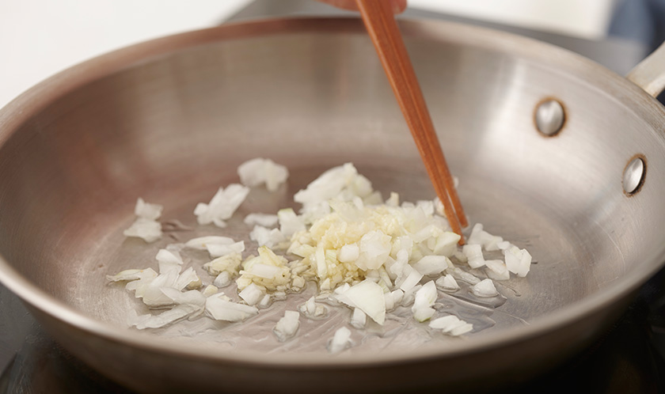
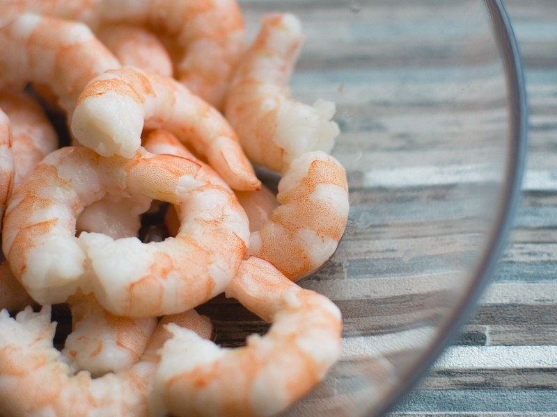
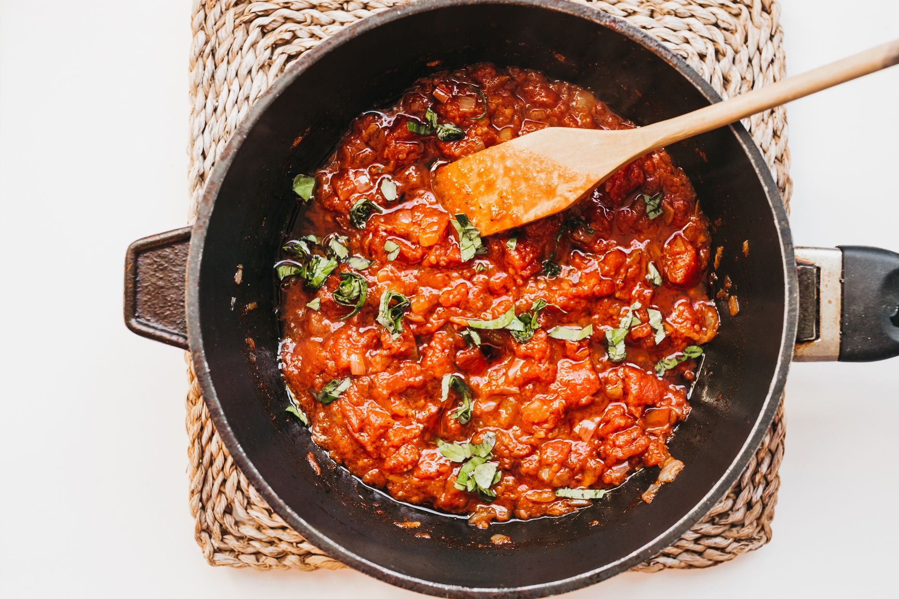
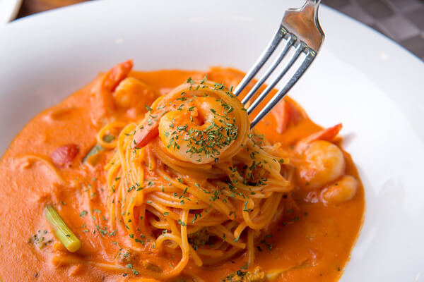

1st 쉬림프 로제 파스타
쉬림프 로제 파스타는 크림소스가 듬뿍 들어간 토마토 소스에 새우가 첨가되어 더욱 더 해산물의 깊은 맛을 느낄수 있습니다

재료
장보실 때 체크하면서 재료를 구입해보세요
올리브 오일 30g
다진 마늘
양파 4/1개
생새우
소금
후추
화이트 와인
면
토마토 소스
생크림 100g
슬라이스 치즈
조리법
-
파스타는 국물이 상대적으로 적기 때문에 불조절이 중요하고 안전에 유념하세요
Step 1 양념만들기

Step 2 새우 삶기

냉동새우 해동법 3가지
Step 3 면 삶기
Step 4 소스 만들기

Step 5 면 볶기 및 완성

쿠캣 영상 (쉬림프 로제 파스타)
프라이팬에 올리브오일 1큰술, 다진마늘 10g, 양파 4/1을 넣고 볶아준다 (불 세기는 초반에는 강하게하되 채소가 점차 익기 시작하면 줄여준다)
물에 소금과 비린내를 잡은 와이트 와인을 소량 넣어준다. 물이 끓기 시작하면 새우를 넣고 10분간 익힌다
1.요리전날 필요한 만큼 용기에 담아 냉장고에 넣어둔다
2.체에 받쳐 흐르는 물에 30초 정도 헹궈준다
3.물에 소금을 타고 30분간 재운다